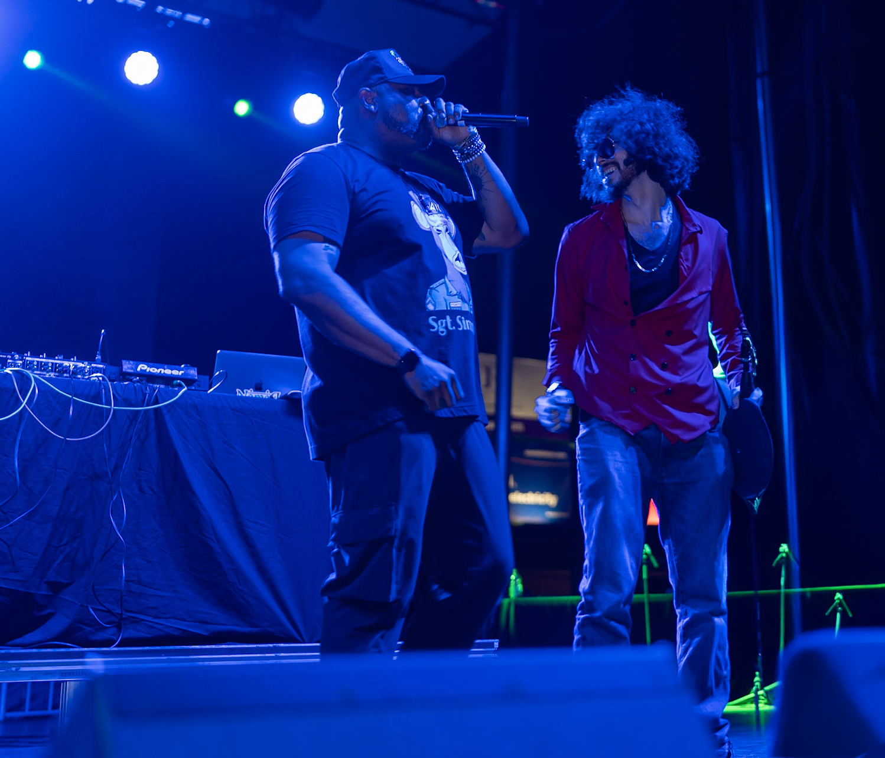
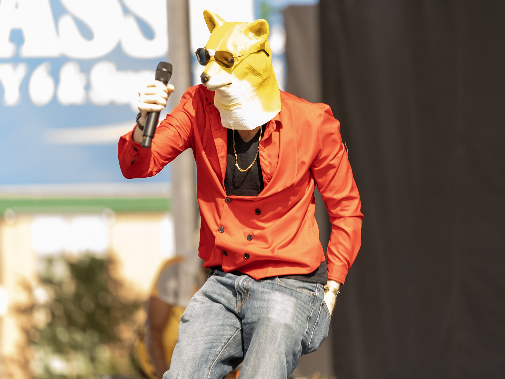
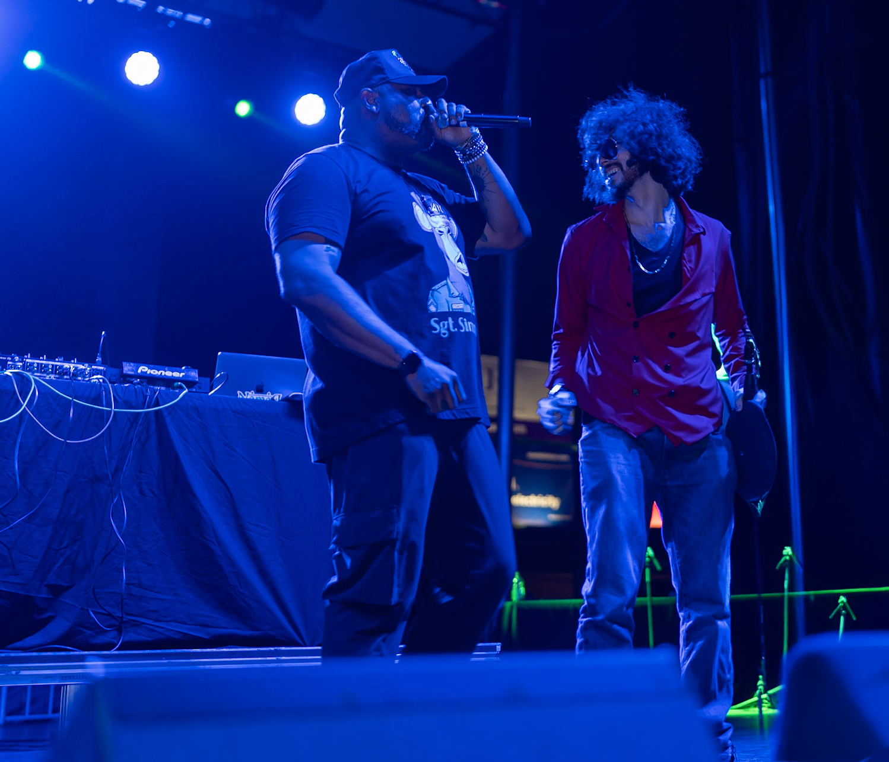
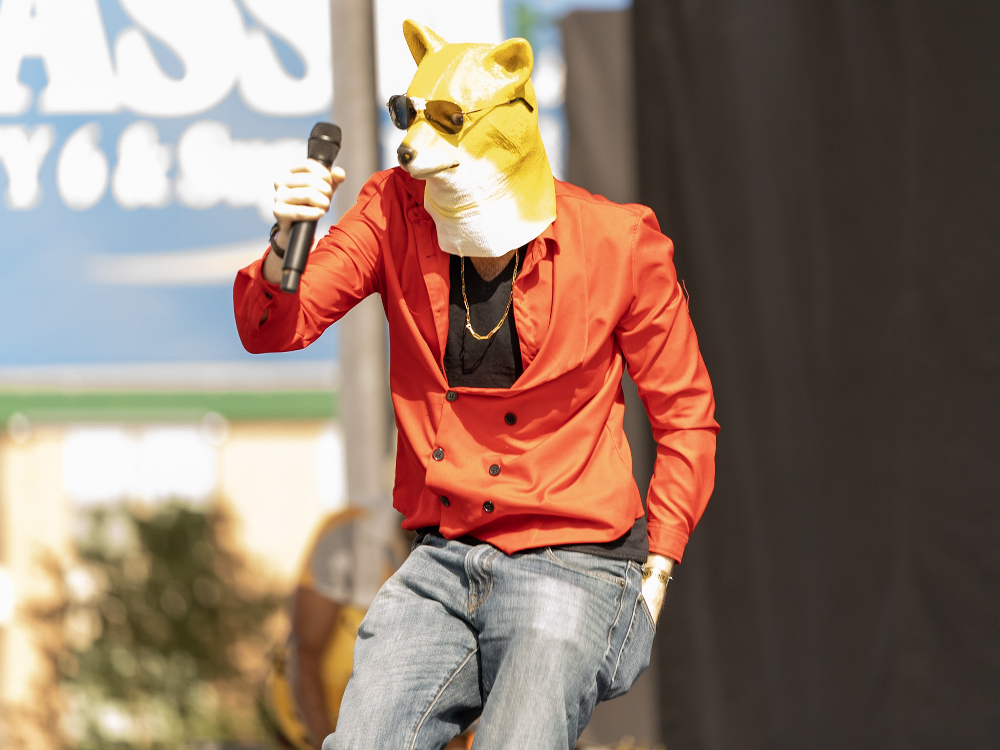

Short Bio
(Tap for the rap version)
Rito Rhymes is the lyrical, infotaining and oftentimes satirical persona of Rito’s multi-faceted creativity, where words take center stage as tools for storytelling, entertainment, and sharp social commentary. As an infotaining rapper and wordsmith, Rito blends clever rhymes, thought-provoking themes, and dynamic performances to craft narratives that both entertain and inspire. Whether delivering biting satire, insightful knowledge or heartfelt lyrics, Rito’s artistry pushes the boundaries of what’s possible in modern rap, combining the power of words with his broader expertise as a multimedia artist.
Rito Rhymes isn’t just about music—it’s a platform for creative expression that bridges humor, poetry, and cultural critique, offering a fresh perspective on the world. With a talent for turning everyday moments into thought-provoking verse, Rito’s work exemplifies the fusion of intellect, emotion, and technical mastery. This persona complements his broader artistic journey, presenting a side of Rito that thrives on rhythm, storytelling, and the transformative power of satire.
Who is Rito Rhymes?
(Tap for plain English version)
(Currently writing rhymes, check back later)

 
